| 日付 | 2026年6月6日（土） |
|---|---|
| 山域 | 丹沢 |
| メンバー | グループ（5名） |
| 山行形態 | 日帰り |
| アクセス | 電車 |
| ルート (Map) | 秦野駅 (10:01) - (11:03) 権現山 (11:26) - (11:41) 弘法山 (12:10) - (13:36) 弘法の里湯 |
サークル山行で弘法山に行く。2015年以来、実に11年振りの訪問。
昔は毎年のようにここで花見をしていた。
いつも秦野駅から権現山の往復のみで、
本当の「弘法山」まで足を伸ばすのは2009年以来だ。
秦野駅を出発し、車道を歩いて弘法山公園入口までやってくる。
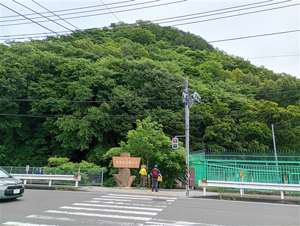
ここから登山開始。
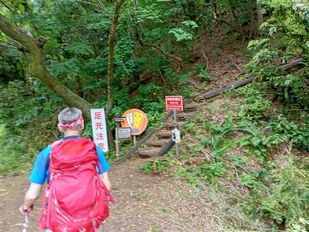
浅間山を通過。1月～4月上旬しか登ったことがない山で、
こんなに緑が濃い姿を見るのは初めてだ。
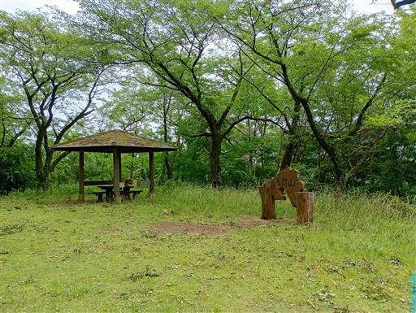
一度車道を横切って再び登山道へ。
低い山だが、ここの駐車場に車を停めるとさらに楽して登ることができる。
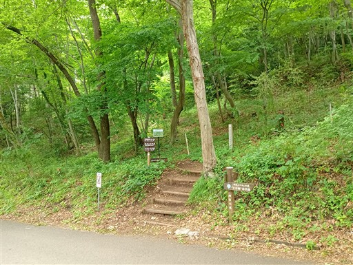
道端に咲くホタルブクロ。
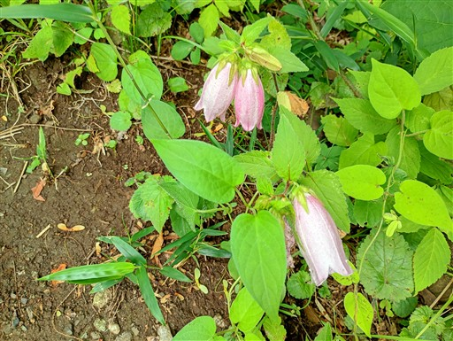
権現山に到着。展望台に登る。
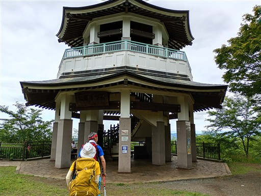
展望台からの風景。富士山は雲の中。
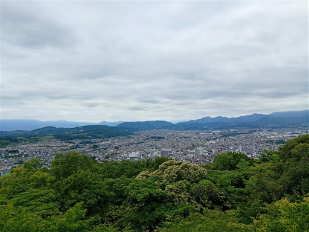
大山も山頂部は見えない。どんよりとした空模様だ。
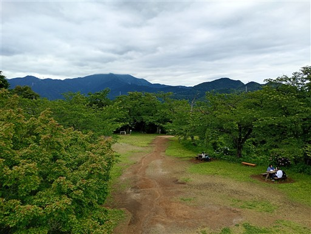
山頂にはアジサイが咲いている。
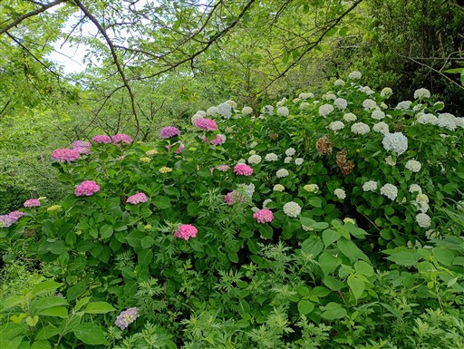
ここから弘法山に向かって歩き出す。この道を歩くのは本当に久々。
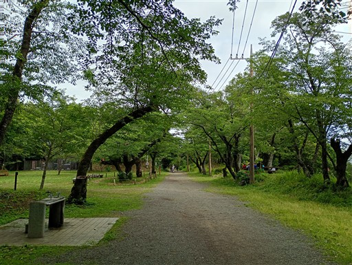
タケノコが販売されている。かなり生長しているが硬くないのだろうか？
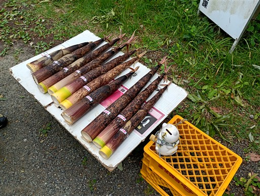
弘法山に到着。標高235m。
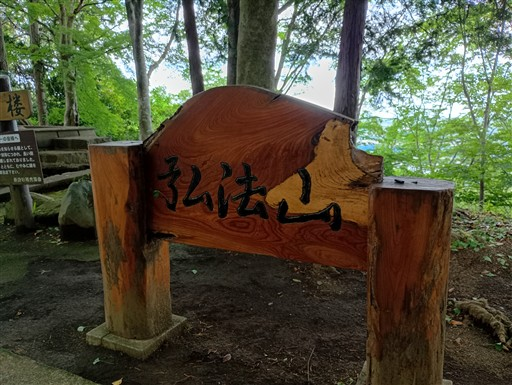
鐘楼があるのだが、むやみにつくことは遠慮するよう書かれている。
何をもって「むやみに」なのか分からないが、正午になっても鐘の音が鳴ることはなかった。
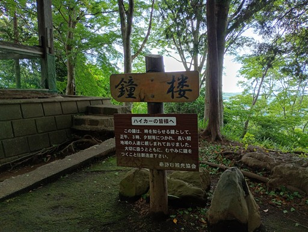
山頂には弘法大師像が祀られている。ここで昼食休憩をとる。
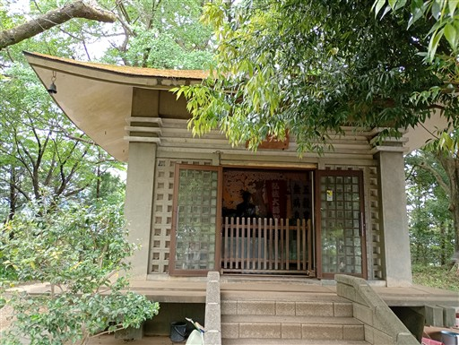
昼食を取ったら出発。歩きやすい道が続く。
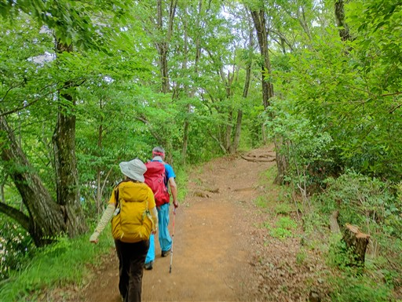
吾妻山を通過。
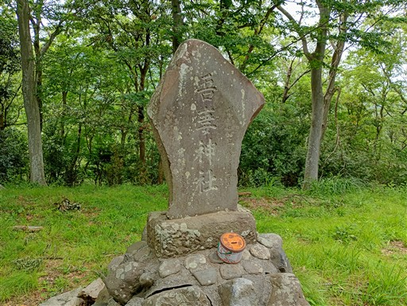
野菜の無人販売所。
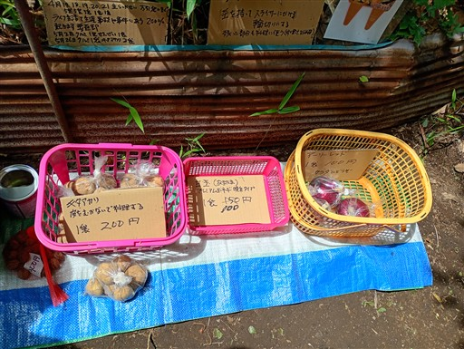
無事下山。
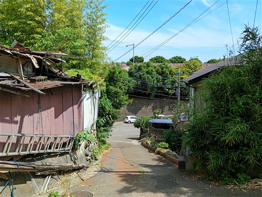
弘法の里湯に寄ってから帰宅する。
あまり展望が広がらなかったのが残念だったが、久々の弘法山をのんびりと楽しめた。
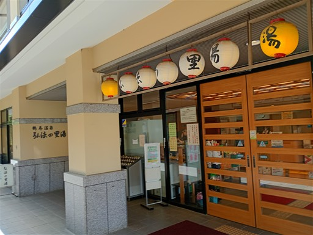